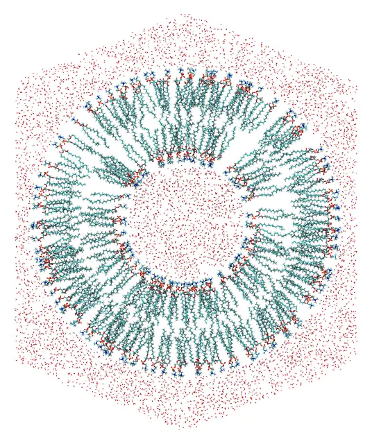
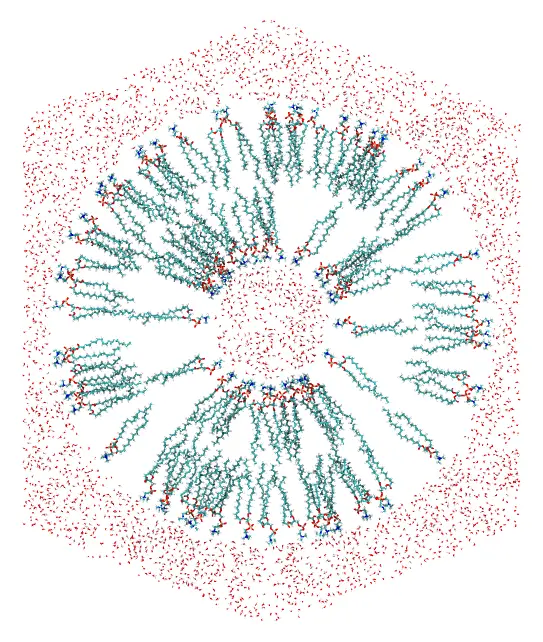
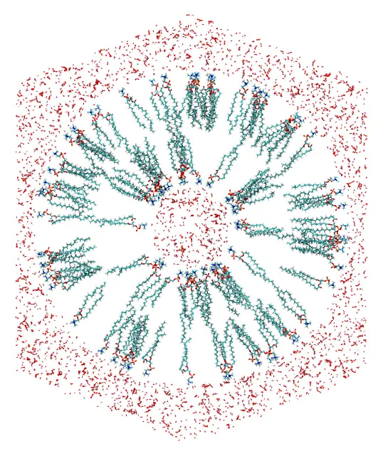

Nanoliposomes
Two POPC nanoliposomes, a small one and a larger one, with water inside and around them, in a periodic cell with the shape of a truncated octahedron. The water inside and the two leaflets of the bilayer are placed in spherical shells, the water outside fills the rest of the cell, and constraints on the polar heads and on the ends of the chains orient the lipids of each leaflet. How many lipids fit in each leaflet depends on its curvature, which is the main subject of this tutorial.

A slab through the center of the larger nanoliposome: the water inside, the two leaflets, and the water outside, which fills the truncated octahedron.
Files: popc.pdb, water.pdb, and the input files small.inp and large.inp.
The lipid is the POPC of the Lipid bilayer tutorial (from the packmol_lipids set of MolSimTestFiles): atom 1 is the nitrogen of the polar head, and atoms 88 and 131 are the ends of the two chains, 26 Å from the head.
The geometry
The leaflets are placed as in the flat bilayer: the head atoms in a narrow band, and the chain ends within 6 Å of the middle of the bilayer. The heads and the chain ends of each leaflet are then 22 Å apart, 85% of the length of the lipid. Everything follows from the radius of the inner heads, R:
| Shell | Radii | Small (R = 25 Å) | Larger (R = 40 Å) |
|---|---|---|---|
| water inside | r < R − 3 | r < 22 Å | r < 37 Å |
| inner leaflet: heads | r < R | r < 25 Å | r < 40 Å |
| inner leaflet: chain ends | r > R + 22 | r > 47 Å | r > 62 Å |
| middle of the bilayer | R + 28 | 53 Å | 68 Å |
| outer leaflet: chain ends | r < R + 34 | r < 59 Å | r < 74 Å |
| outer leaflet: heads | r > R + 56 | r > 81 Å | r > 96 Å |
| water outside | r > R + 58 | r > 83 Å | r > 98 Å |
periodic cell (d) | 2(R + 58) + 20 | 186 Å | 216 Å |
The periodic cell is a truncated octahedron, the shape closest to a sphere among the cells that fill space by translation, and thus the one that needs the least water around a spherical object. With pbc octahedral 0. 0. 0. d, the faces closest to its center (the hexagonal ones) are at d/2 from it, so the cells above have at least 10 Å of water between the nanoliposome and their faces: 20 Å of water between the nanoliposome and its nearest periodic images.
Real liposomes are large: the smallest have diameters of about 20 nm. The small nanoliposome has a diameter of 16 nm (at its outer heads), and the larger one of 19 nm. Even so, with the water, they have about 350 and 600 thousand atoms.
Curvature and density
In a flat bilayer, the area available to each lipid is the same at the heads and at the chain ends: 64 Ų for POPC. In a curved leaflet it is not. The surface of a sphere grows with the square of its radius, so the area per lipid is smaller at the heads of the inner leaflet than at its chain ends, and smaller at the chain ends of the outer leaflet than at its heads. The lipids are rigid in the packing: they cannot splay their chains to fill the wider end, nor squeeze them at the narrower one.
The number of lipids of each leaflet is then limited by its most crowded surface. A safe count gives each lipid the 64 Ų of the flat bilayer there:
- inner leaflet: the surface of the heads, 4πR² / 64;
- outer leaflet: the surface of the middle of the bilayer, 4π(R + 28)² / 64.
The other end of each lipid has more room, and is less dense than in a flat bilayer:
| Small (R = 25 Å) | Larger (R = 40 Å) | |
|---|---|---|
| inner leaflet, safe count | 4π × 25² / 64 = 123 | 4π × 40² / 64 = 314 |
| ⋯ area per lipid at its chain ends | 226 Ų | 154 Ų |
| outer leaflet, safe count | 4π × 53² / 64 = 552 | 4π × 68² / 64 = 908 |
| ⋯ area per lipid at its heads | 149 Ų | 128 Ų |
The excess area at the wider ends shrinks as the radius grows: from 3.5 times the area of the flat bilayer (226 Ų) at the chain ends of the small inner leaflet, to 2.4 times (154 Ų) in the larger one. It only disappears in a flat bilayer, with R much larger than the length of the lipid. Computing the number of lipids from the wider surface instead (for the outer leaflet of the small nanoliposome, 4π × 81² / 64 = 1288) puts more than twice as many lipids in the leaflet as fit at its narrow end, and the packing fails.
The safe count is a lower bound: the lipids are not cylinders, and some more fit. The larger nanoliposome here has 20% more lipids than the safe count, 377 in the inner leaflet and 1090 in the outer one, which still pack, with 53 Ų per lipid at the narrow surfaces. The small nanoliposome also packs with 20% more lipids (148 and 662), but it takes about twice as long as with the safe counts, which it has here:

The small nanoliposome, with the safe counts: the lipids fan out from the inner heads, and the outer heads are sparse.
Compare the two images: in the small nanoliposome the empty space between the chain ends of the inner leaflet, and between the heads of the outer leaflet, is evident. A simulation closes it, with the lipids tilting and their chains filling the space, but the bilayer may then be thinner, or the area per lipid larger, than in a flat membrane. The larger the nanoliposome, the closer its initial configuration is to a real bilayer, at the cost of a larger system.
The water inside is a sphere of radius R − 3, at 1 g/mL (29.9 ų per molecule): for the small nanoliposome, 4/3 π 22³ / 29.9 = 1492 molecules. The water outside fills the volume of the cell, 4√3/9 d³, minus that of the sphere of radius R + 58: (4√3/9 × 186³ − 4/3 π 83³) / 29.9 = 85567 molecules.
Command line
The input file small.inp (click to expand)
#
# Small POPC nanoliposome with water inside and outside
#
tolerance 2.0
output small.pdb
# Uncomment to write only the initial placement of the molecules to the output file,
# without packing them (to check the constraints):
# check_initial_placement
# Truncated octahedron periodic cell centered at the origin, with at least 10 Å of
# water between the nanoliposome and the faces of the cell. The output is written in
# the shape of the octahedron
pbc octahedral 0. 0. 0. 186.
periodic_boundary_style octahedral
# Water inside the nanoliposome: a sphere of radius 22 Å
structure water.pdb
number 1492
inside sphere 0. 0. 0. 22.
end structure
# Inner leaflet: the heads (atom 1, N) inside the sphere of radius 25 Å, pointing to
# the water inside, and the ends of the chains (atoms 88 and 131) outside the sphere
# of radius 47 Å, near the middle of the bilayer (r = 53 Å)
structure popc.pdb
number 123
atoms 1
inside sphere 0. 0. 0. 25.
end atoms
atoms 88 131
outside sphere 0. 0. 0. 47.
end atoms
end structure
# Outer leaflet: the ends of the chains inside the sphere of radius 59 Å, and the
# heads outside the sphere of radius 81 Å, pointing to the water outside
structure popc.pdb
number 552
atoms 88 131
inside sphere 0. 0. 0. 59.
end atoms
atoms 1
outside sphere 0. 0. 0. 81.
end atoms
end structure
# Water outside the nanoliposome, filling the rest of the periodic cell
structure water.pdb
number 85567
outside sphere 0. 0. 0. 83.
end structure
The lipids have no constraint on the whole molecule: only the head and the chain ends are constrained, and the rest of each molecule follows them. The outer water is only constrained to be outside the sphere: the periodic cell bounds it. The molecules are packed in the parallelepiped of the cell, as any triclinic cell, and periodic_boundary_style octahedral writes them wrapped into the truncated octahedron, around the nanoliposome (see Truncated octahedral box).
The input file of the larger nanoliposome, large.inp, is the same, with the radii and numbers of the tables above.
Check the initial placement first
Uncomment the check_initial_placement line of the input file, and run it as below (see Checking the initial placement): the initial placement of the molecules is written to the output file (small.pdb):

A slab through the center of the initial approximation of the small nanoliposome: the two leaflets and the water are already in their shells, but molecules may overlap.
Then comment the line again, and run the packing.
Packing
Run it with:
packmol small.inpThe packed system is written to small.pdb, in about 16 seconds with 14 threads. The larger nanoliposome (packmol large.inp) takes about 30 seconds.
Julia
In Julia, the geometry of the table above can be written once, as a function of the radius of the inner heads, and of the numbers of lipids of the two leaflets:
using Packmolfunction nanoliposome(R, n_inner, n_outer, output) origin = [0., 0., 0.] d = 2 * (R + 58) + 20 # size of the truncated octahedron # Water at 1 g/mL: 29.9 ų per molecule water_inside = structure_type("water.pdb"; number = round(Int, 4/3 * π * (R - 3)^3 / 29.9), constraints = [InsideSphere(origin, R - 3)], ) # Heads (atom 1) in, chain ends (atoms 88 and 131) out inner_leaflet = structure_type("popc.pdb"; number = n_inner, atom_constraints = [ [1] => InsideSphere(origin, R), [88, 131] => OutsideSphere(origin, R + 22), ], ) # Chain ends in, heads out outer_leaflet = structure_type("popc.pdb"; number = n_outer, atom_constraints = [ [88, 131] => InsideSphere(origin, R + 34), [1] => OutsideSphere(origin, R + 56), ], ) water_outside = structure_type("water.pdb"; number = round(Int, (4 * sqrt(3) / 9 * d^3 - 4/3 * π * (R + 58)^3) / 29.9), constraints = [OutsideSphere(origin, R + 58)], ) system = PackmolSystem([water_inside, inner_leaflet, outer_leaflet, water_outside]; output, tolerance = 2.0, unitcell = octahedral_unitcell(Float64, d), # centered at the origin # check_initial_placement = true, # uncomment to only place the molecules ) # Write the output in the shape of the truncated octahedron triclinic_to_octahedral(system) return systemend# The safe counts: 64 Ų per lipid at the narrow surface of each leafletsafe_count(r) = round(Int, 4π * r^2 / 64)small = nanoliposome(25.0, safe_count(25), safe_count(25 + 28), "small.pdb")packmol(small)# 20% more lipids than the safe countslarge = nanoliposome(40.0, 377, 1090, "large.pdb")packmol(large)As with the input file, check the initial placement first, with check_initial_placement = true (commented in the code above).
InsideSphere(center, radius) and OutsideSphere(center, radius) take the parameters of inside sphere and outside sphere.